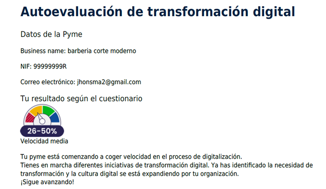
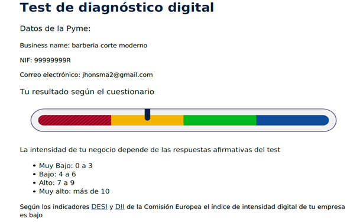
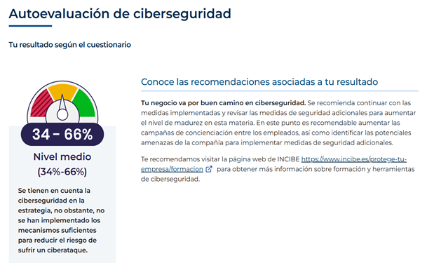

PLAN DE TRANSFORMACIÓN DIGITAL
Contenido
- Introducción al Plan de transformación Digital.
- Diagnóstico y Reflexión Estratégica
- Análisis interno de la situación digital actual
- Análisis externo de sector de barberías y competencia
- Definición inicial de áreas de actuación prioritarias
- Transformando la experiencia del cliente
- Perfil del cliente ideal (buyerpersona)
- Mapa de empatía del cliente
- Mapa de experiencia del cliente (customerjourneymap)
- Lienzo del modelo de negocio
- Habilitando la Transformación
- Lienzo de transformación digital
- Tecnologías y herramientas a implementar
- Priorización de soluciones digitales
- Gestionando el Cambio
- Objetivos específicos y KPIspara la barbería
- Plan de acción con iniciativas priorizadas
- Constitución del equipo líder del cambio
- Análisis de formación necesaria
- Cronograma de implementación
- Presupuesto e inversión requerida
- Sectores de Aplicación Específicos para Barberías
- Gestión de citas y reservas online
- Experiencia digital del cliente
- Marketing digital y redes sociales
- Presencia online y reputación digital
1. Introducción al Plan de Transformación Digital
El presente Plan de Transformación Digital se enmarca en la
iniciativa Generación Digital PYMES, financiada por la Unión
Europea, cuyo objetivo es acelerar la digitalización de las pequeñas
y medianas empresas. Este documento propone un conjunto de acciones
que permitirán a la
Barbería El Corte Moderno modernizar su operativa,
mejorar su relación con los clientes y aumentar su competitividad
mediante el uso estratégico de herramientas digitales.
El Corte Moderno
es una barbería de estilo urbano que destaca por ofrecer servicios
personalizados de corte y arreglo de barba en un ambiente
contemporáneo y cercano. Actualmente, su presencia digital se limita
a su cuenta de Instagram, donde comparte contenidos visuales sobre
su trabajo y estilo. Las reservas se gestionan de manera
tradicional, a través de llamadas telefónicas o mensajes de
WhatsApp, lo que limita la automatización y escalabilidad del
negocio.
Este plan pretende servir como hoja de ruta para impulsar la
transformación digital del negocio, optimizando procesos internos,
mejorando la experiencia del cliente y ampliando su visibilidad
online mediante herramientas de gestión, canales digitales y
estrategias de marketing más eficaces.
🎯 Misión
Ofrecer experiencias de barbería de alta calidad que combinen tradición y tendencias actuales, en un ambiente moderno, profesional y cercano.
🚀 Visión
Ser una barbería de referencia en Madrid por su estilo, innovación, atención personalizada y adaptación al entorno digital.
💎 Valores
- Profesionalidad y excelencia en el servicio
- Innovación y adaptación a las tendencias
- Cercanía y confianza con el cliente
- Pasión por el detalle
- Compromiso con la mejora continua
💼 ¿Qué hacemos?
Brindamos servicios de corte moderno, arreglo y diseño de barba, perfilado, cuidado capilar masculino y asesoría de imagen. Vendemos estilo, autoestima y una experiencia personalizada para cada cliente.
🔮 Prospectiva
En un entorno cada vez más digital y competitivo, la barbería debe evolucionar hacia un modelo más automatizado, con mejor gestión de clientes, visibilidad online profesional, análisis de datos y fidelización digital.
2. Diagnóstico y Reflexión Estratégica
ANÁLISIS INTERNO –
Realizar la autoevaluación de transformación digital a través de Acelera Pyme ha sido una experiencia reveladora para mí y para el proyecto de Barbería El Corte Moderno. Hasta ahora, nos hemos manejado bien con Instagram como único canal de visibilidad y la gestión de reservas por WhatsApp o teléfono. Pero este ejercicio me ha hecho ver que, aunque hemos dado ciertos pasos en la dirección correcta, aún queda mucho camino por recorrer si queremos crecer y profesionalizarnos digitalmente. Según los resultados, nos encontramos en una fase intermedia, lo que me parece acertado. Ya tenemos conciencia de la importancia del mundo digital, nos estamos formando, y poco a poco la mentalidad dentro del negocio se está alineando con esta necesidad.
Este es un buen punto de partida, pero también es una llamada de atención para no quedarnos estancados. Me sorprendió gratamente ver que hay aspectos en los que estamos más avanzados de lo que pensaba, como la estrategia digital inicial, cierta sensibilización sobre ciberseguridad y el uso básico de canales digitales con clientes y otras entidades. Estas pequeñas bases son valiosas y motivadoras. Sin embargo, también fui muy consciente de nuestras debilidades, especialmente en lo relacionado con la infraestructura tecnológica, automatización de procesos, venta online y herramientas internas de gestión. Uno de los puntos que más me hizo reflexionar fue el tema de los canales de venta y medios de pago digitales. En un sector tan visual y competitivo como el nuestro, depender solo de las redes sociales no es suficiente. Es evidente que necesitamos dar el paso a una página web profesional, ofrecer más formas de pago, y sobre todo, empezar a recopilar y analizar datos de clientes para entender mejor sus necesidades y hábitos
ANÁLISIS INTERNO –
Después de realizar el Test de Diagnostico Digital, he podido tener una visión mucho más clara y honesta del punto en el que se encuentra Barbería El Corte Moderno dentro del proceso de transformación digital. Los resultados no me sorprendieron del todo, pero sí me ayudaron a poner nombre y número a varias intuiciones que ya tenía: nuestro nivel de digitalización es bajo. Este diagnóstico se basa en el índice de intensidad digital, que nos coloca en una franja de 4 a 6 puntos. Aunque no es el peor escenario, sí deja claro que tenemos mucho por mejorar para estar al nivel de otras pymes que ya aprovechan todas las ventajas del mundo digital. Para una barbería que solo tiene presencia en Instagram y gestiona citas por WhatsApp o llamadas, es evidente que estamos aún en una etapa bastante básica. en el entorno actual no basta con estar en redes sociales.
El test demuestra que muchas pymes ya usan las redes con objetivos claros de marketing, fidelización y ventas. Nosotros usamos Instagram más como una galería de cortes que como una herramienta de negocio. Hay margen para profesionalizar ese canal, medir resultados y mejorar el alcance. Esta autoevaluación me ayudó a entender que la digitalización no es solo una moda o una obligación, sino una oportunidad real para crecer, ser más competitivos y ofrecer un mejor servicio.
ANÁLISIS INTERNO –
El resultado del test nos situó en un nivel medio de ciberseguridad (entre un 34% y un 66%). Al principio, esto me pareció aceptable, incluso positivo. Sin embargo, al reflexionar más a fondo, entendí que un “nivel medio” no es un punto de llegada, sino más bien un punto de partida. Significa que reconocemos la importancia de la ciberseguridad, pero todavía hay muchas medidas que no hemos adoptado y que podrían marcarnos la diferencia entre estar protegidos o vulnerables. Una de las recomendaciones más claras del informe fue la necesidad de seguir reforzando las acciones de seguridad que ya tenemos, pero también incorporar nuevas medidas adaptadas a nuestras necesidades específicas. Por ejemplo, aunque tenemos contraseñas seguras y usamos herramientas básicas de protección, no contamos con protocolos claros ante un posible ataque, ni tenemos formación interna sobre cómo actuar frente a riesgos digitales.
Otro punto clave fue la concienciación del equipo. En una barbería pequeña como la nuestra, muchas veces no se piensa que formar al personal en ciberseguridad sea necesario, pero ahora me doy cuenta de que incluso algo tan simple como abrir un enlace malicioso desde el móvil de trabajo podría suponer un problema serio. La seguridad digital no depende solo de programas y antivirus, también de las personas que los usan. En resumen, esta autoevaluación me sirvió para tomar conciencia real de que la ciberseguridad es tan importante como tener bien afiladas las tijeras o limpio el local.
🎯 ANÁLISIS EXTERNO - OTRAS EMPRESAS
| Empresa innovadora | Modelo de negocio | Estrategia digital | Productos/Servicios |
|---|---|---|---|
| Barber Shop La Máquina | Barbería urbana en Madrid, atención local, orientada a clientes de todas las edades | Plataforma de reservas online vía Booksy, reseñas verificadas, permite elegir profesional y horario | Corte clásico, degradado, arreglo de barba, servicios para niños y jubilados |
| Los Parceritos Barber Studio | Barbería joven y moderna, con atención personalizada y estilo latino. | Reservas por Booksy, Instagram activo con reels y publicaciones frecuentes | Corte más barba, diseños, cejas, servicio rápido y precios competitivos. |
| GrandMaster BarberShop | Barbería urbana de estilo moderno, con fuerte identidad visual y clientela joven. | Instagram como canal principal de marketing, estética profesional, interacción en redes. | Cortes degradados, diseños personalizados, perfilado de barba y estilos urbanos. |
| Tijera de Oro | Barbería local con enfoque integral en estética masculina, ubicada en Madrid. | Reservas online por Booksy, presencia en Instagram con reels, estilos y promociones visuales. | Corte clásico y moderno, arreglo de barba, diseño de cejas, alisado brasileño, relajamiento, corte con keratina, platinado, mechas. |
3. Transformando la Experiencia del Cliente


4. Habilitando la Transformación
🚀 Lienzo de Transformación Digital
💻 Tecnologías y Herramientas a Implementar
📊 Priorización de Soluciones Digitales
5. Gestionando el Cambio
🎯 Objetivos Específicos y KPIs
..
📈 KPIs Operativos
- Tasa de ocupación de citas
- Tiempo promedio de espera
- Eficiencia en gestión de inventario
- Automatización de procesos administrativos
💰 KPIs de Negocio
- Crecimiento de ingresos digitales
- Retención y fidelización de clientes
- Costo de adquisición de clientes (CAC)
- Valor de vida del cliente (CLV)
🗓️ Plan de Acción con Iniciativas Priorizadas
...
👥 Constitución del equipo líder del cambio
- ..
📚 Análisis de Formación Necesaria
..
⏰ Cronograma de Implementación
..
💵 Presupuesto e Inversión Requerida
...
6. Sectores de Aplicación Específicos para Barberías
📅 Gestión de Citas y Reservas Online
Sistema automatizado integral que incluye calendario online sincronizado, confirmaciones automáticas vía SMS/email, recordatorios personalizados, gestión de cancelaciones y reprogramaciones, y analytics de patrones de reserva.
✨ Experiencia Digital del Cliente
Optimización de todos los touchpoints digitales: desde el primer contacto online hasta el seguimiento post-servicio, incluyendo onboarding digital, personalización de servicios y programa de fidelización gamificado.
📱 Marketing Digital y Redes Sociales
Estrategia de Contenidos Multi-canal
- Instagram: Contenido visual de trabajos realizados, behind-the-scenes, stories interactivos
- Facebook: Promociones, eventos, interacción con la comunidad local
- TikTok: Videos cortos de técnicas, transformaciones, tendencias
- Google My Business: Optimización para búsquedas locales y reseñas
Campañas de Marketing Automatizado
- Email Marketing: Newsletters mensuales con tips de cuidado, promociones personalizadas
- SMS Marketing: Recordatorios de citas, ofertas flash, cumpleaños de clientes
- Publicidad Digital: Campañas de Facebook/Instagram Ads segmentadas geográficamente
- Retargeting: Recuperación de clientes que visitaron la web sin reservar
🌐 Presencia Online y Reputación Digital
Desarrollo Web Optimizado
- Sitio web responsive y rápido
- SEO local optimizado
- Integración con sistema de reservas
- Galería de trabajos realizados
Gestión de Reputación
- Monitoreo de menciones online
- Estrategia de respuesta a reseñas
- Programa de incentivos para reseñas
🚀 Beneficios Esperados de la Implementación
La implementación integral de estas soluciones digitales específicamente adaptadas para barberías permitirá:
- Aumento del 30-40% en la eficiencia operativa
- Mejora del 50% en la satisfacción del cliente
- Crecimiento del 25% en el número de clientes nuevos
- Incremento del 35% en la fidelización de clientes existentes
- Reducción del 60% en tareas administrativas manuales